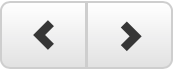
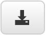

The RDF Data Cube Vocabulary presents an ontology for publishing multi-dimensional data, such as statistics into RDF. In most cases though datasets are already published using another ontology and publishing the data again in the RDF Data Cube Vocabulary to provide statistics would be inefficient. We will present a process for statistical enhancement of an existing dataset published as RDF with an arbitrary ontology and then show how we can use such a dataset to produce charts in Sextant.
To enhance a dataset, we use the classes qb:DimensionProperty, qb:MeasureProperty and qb:AttributeProperty along with the property qb:order from the RDF Data Cube Vocabulary. What we want to achieve is to create a single query as shown below, that will adjust itself according to the statistic information we want to extract from a dataset.
Using the above vocabulary, to statistically enhance a dataset we first need to define which properties represent the dimension and which represent our measures. A basic rule can be that object properties define dimensions and numeric datatype properties are the measures. We use the property qb:order to represent the hierarchical structure of the ontology and thus the dimensions' hierarchy. The next step is to create the static part of the general query. The static part is a graph pattern that would match all the data in our set. Since we want to extract statistical information, we need to run through the data as a whole and select the data measurements that are needed. Using the introduced technique we can now define some parts of the query as optional and add filters to narrow down the results to our needs. A query produced with this technique is the following:
In the selection clause we have all the free dimensions and the measurements we want in our results. The where clause consists of the static part along with the optional parts on the selected measures and the filtering on the fixed dimensions. Some bindings are also added to handle null values and ensure that we have fixed size tuples in the results. As with the predefined queries, an expert is needed to make the adjustments described in the ontology and provide the static part of the query as an RDF triplet. This procedure though is simple and needs to be done once for a data set to enhance it for statistical use. When these tasks are finished we can easily produce charts using Sextant interface.
We can create a chart using the button in Sextant's main menu bar and then select Create Chart and view all the charts that are loaded be selecting Show Charts, as shown in the figure below.
Then we fill the following form to create one or more charts according to the selected values. First we provide an endpoint URI with the statistically enhanced data and the Port it listens to. When connection is achieved, all the dimensions are presented and we can choose which dimensions to fix. As a result, all the instances of the selected fixed dimensions are presented to select one from each, along with the measures available. When the instances and the measures are chosen we Select chart type and Sextant uses the information given to create the final query and present the results as charts.
As with map layers, charts are also saved when we choose to save a map. Charts are represented in RDF using a chart ontology and saved as part of the map. Each chart has a title and a legend to assist the user in reading it. All the data on the chart are responsive and we can view the actual values by hovering over a bar or a point. We can view all the charts loaded on the map using the  buttons and download a chart as in image in our browser's download folder using the  button. In the following figures we can view some charts produced in Sextant.